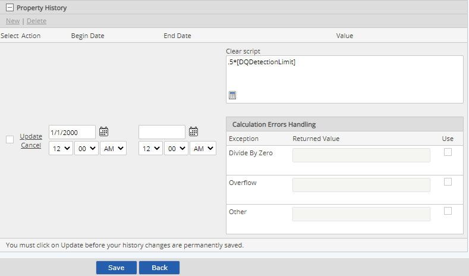
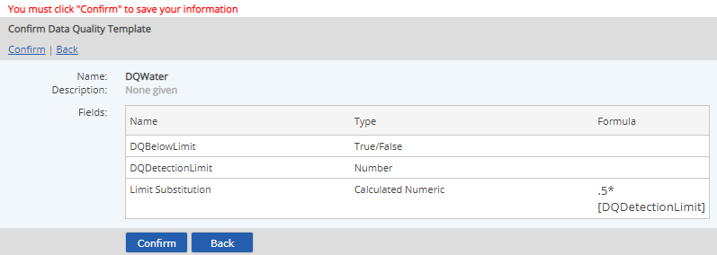

To create a calculation template:
Select New Data Quality Template.
Enter a Name for the template and a Description.
The Name appears on the properties form for objects using the template, as the section label for the custom fields. The description is only seen in the Data Quality Templates list, and may help users identify the purpose of the template.
Select Add to add fields to the template.
In the selection window, browse or use the search to find and select the fields to add to the template. Check the checkbox for the fields you want and click Select Fields.
Field selections are limited to the following allowed types:
Numeric
Boolean
Small text
Medium text
Calculated
The order in which the fields appear will be the display order on the properties form for the objects to which the template is applied. To re-order the fields, select a field and click the Up or Down button.
Select Save.
If any calculated fields are included on the template, you must then define the calculation and specify a Start date for the calculation. See Calculated Numeric.
Click the Calculator button to use the calculation builder. The other fields on the Data Quality Template are available to use for input. After defining the formula, click Save.
Select a Start Date for the formula and click Update to save the value.
The calculation Start Date defaults to the current date. It must be changed to include the earliest date for which data will be entered in the system. Calculations will not be made before this date.

Calculation formula definitions apply only to this template and do not affect other templates in which the field may be used.
Click Save.
The Data Quality Template fields are displayed for review, with the formulas.

A Data Quality Template may be edited in order to:
Properties may not be removed from the template if they are either being used in calculations or have associated data.
To edit a Data Quality Template:
Right click the template in the Data Quality Templates list and select Edit.
To add a field, select Add. In the selection window, browse or use the search to find and select the fields to add to the template. Check the checkbox for the fields you want and click Select Fields.
To create a new custom field to add to the template, click Create New Custom Field. (See Create/Edit Custom Fields.) After the new field is created, you will be returned to the template edit screen. The new field will appear in the Selected Fields list.
To remove a field, select the field in the list and click Remove.
To change the field order, select a field and click the Up or Down button to change its position.
To edit the formula for a calculated field, select the Edit link from the formula-based property table (bottom of page).
If you edit a calculation definition and want to preserve previously calculated data, set a new Begin Date for the edited formula. The calculation history will then be preserved for old data and the new formula used only for new data.